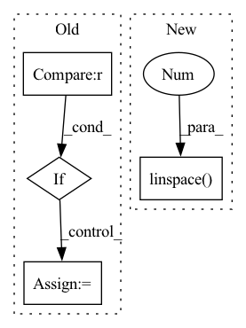

Pattern ID :28769
Before Change
in_channels = out_channels
out_channels = floor(out_channels * config["channel_gain"])
if out_channels > config["max_channels"] :
out_channels = config["max_channels"]
def forward(self, x):
// Forward downAfter Change
// Define stochastic depth for drop path of swin blocks
swin_depth = config["depths"]
drop_path_rate = [x.item() for x in torch.linspace(0 , config["drop_path_rate"], sum(swin_depth)) ]
// Define downsample operation for swin blocks
downsample_layer = ConvPatchMerging if config["conv_merging"] else PatchMergingIn pattern: SUPERPATTERN
Frequency: 3
Non-data size: 4
Instances Fragment ID: 84673934
Project Name: bwittmann/transoar
Commit Name: d72c16e4a177ba701699f9678ba35a66691ad203
Time: 2022-02-17
Author: bastian.wittmann@tum.de
File Name: transoar/models/backbones/attn_fpn.py
M Class Name: Encoder
N Class Name: Encoder
M Method Name: __init__(2)
N Method Name: __init__(2)
M Parent Class: nn.Module
N Parent Class: nn.Module
M File Name: transoar/models/backbones/attn_fpn.py
N File Name: transoar/models/backbones/attn_fpn.py
M Start Line: 26
M End Line: 48
N Start Line: 87
N End Line: 129
Before Change
break
if loss.detach().cpu().item() > loss_schedule[curr_stage]:
curr_stage += 1
if curr_stage < len(lr_schedule) :
curr_lr = lr_schedule[curr_stage]
for g in optimizer.param_groups:
g["lr"] = curr_lr
else:After Change
def train(network):
loss_schedule = np.linspace(0.9 , 0.99, num=3)
curr_stage = 0
curr_lr = 1e-3
lr_history = []
history = [] Fragment ID: 84673929
Project Name: neurotorch/neurotorch
Commit Name: 1448822fbe5f5b55b9f4434da75c983e31f11bf8
Time: 2022-08-06
Author: 50332514+JeremieGince@users.noreply.github.com
File Name: applications/time_series_forecasting_spiking/ts_pred_with_lif_autoencoder.py
M Class Name: AnonimousClass
N Class Name: AnonimousClass
M Method Name: train(1)
N Method Name: train(1)
M Parent Class:
N Parent Class:
M File Name: applications/time_series_forecasting_spiking/ts_pred_with_lif_autoencoder.py
N File Name: applications/time_series_forecasting_spiking/ts_pred_with_lif_autoencoder.py
M Start Line: 119
M End Line: 148
N Start Line: 123
N End Line: 146
Before Change
class WeightSentencizer(Sentencizer):
def craft(self, raw_bytes: bytes, doc_id: int, *args, ** kwargs) -> List[Dict]:
results = super().craft(raw_bytes, doc_id)
if len(results) > 1 :
results[0]["weight"] = 0.5
avg = 0.5 / (len(results) -1)
for result in results:After Change
class WeightSentencizer(Sentencizer):
def craft(self, raw_bytes: bytes, doc_id: int, *args, ** kwargs) -> List[Dict]:
results = super().craft(raw_bytes, doc_id)
weights = np.linspace( 1, 0 , len(results))
for result, weight in zip(results, weights):
result["weight"] = weight
return results Fragment ID: 84673925
Project Name: jina-ai/examples
Commit Name: ce67d135189ee40a3c9ed02096723df07cadee93
Time: 2020-04-13
Author: xiong.ma@jina.ai
File Name: news-search/images/extractor/extractor.py
M Class Name: WeightSentencizer
N Class Name: WeightSentencizer
M Method Name: craft(3)
N Method Name: craft(3)
M Parent Class: Sentencizer
N Parent Class: Sentencizer
M File Name: news-search/images/extractor/extractor.py
N File Name: news-search/images/extractor/extractor.py
M Start Line: 9
M End Line: 17
N Start Line: 10
N End Line: 15